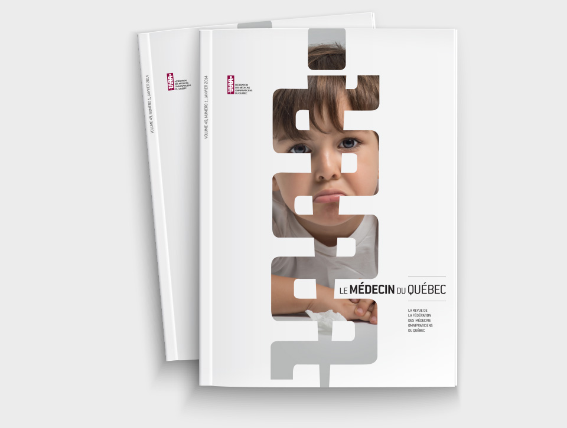
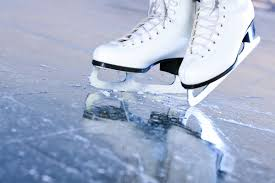
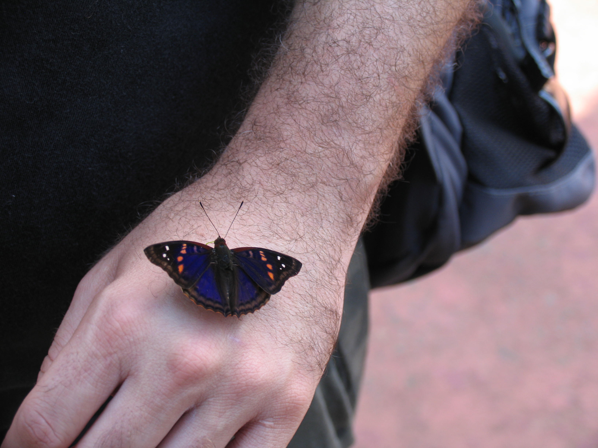
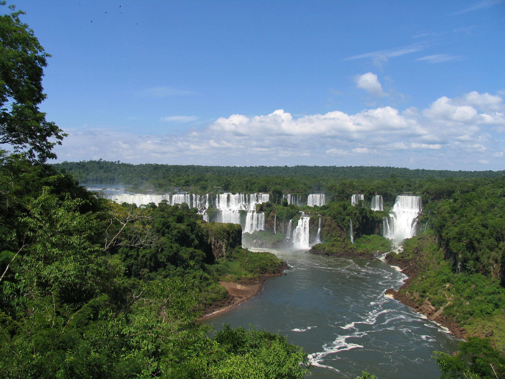

Bonjour, je me présente Christine Brendell-Girard

Voici quelques caractéristiques à mon propos concernant :
Le travail et les études

Mon travail consiste à coordonner une revue scientifique destinée aux médecins omnipraticiens du Québec
Le Médecin du Québec, de collaborer
avec les auteurs qui ont acceptés d'écrire dans le cahier de formation. Je fais d'ailleurs la mise en ligne de congrès
médicaux sur différente thématique, c'est, entre autres, pour cela que je me suis inscrite au cours d'Intégration
& Design Web afin d'acquérir des compétences supplémentaires.
Haut de la page
Le sport

J'ai pratiqué longtemps le patinage artistique. À ces jours je me concentre à un entraînement diversifié, soit la course
à pied, le ski, le vélo, etc.
Haut de la page
Les loisirs
Mes loisirs se confondent avec les sports, mais j'aime d'ailleurs pratiquer la photographie, j'adore voyager, lire
et apprendre de nouvelles choses, comme les cultures, de nouvelles recettes, etc.
| Loisirs |
Photos descriptives |
| Photographie |
 |
| Voyage |
 |
Haut de la page
Les rêves
Faire le tour de cette merveilleuse planète, avoir une terre de vignoble sont des rêves, qui sait, peut-être un jour ils
se réaliseront.
Haut de la page